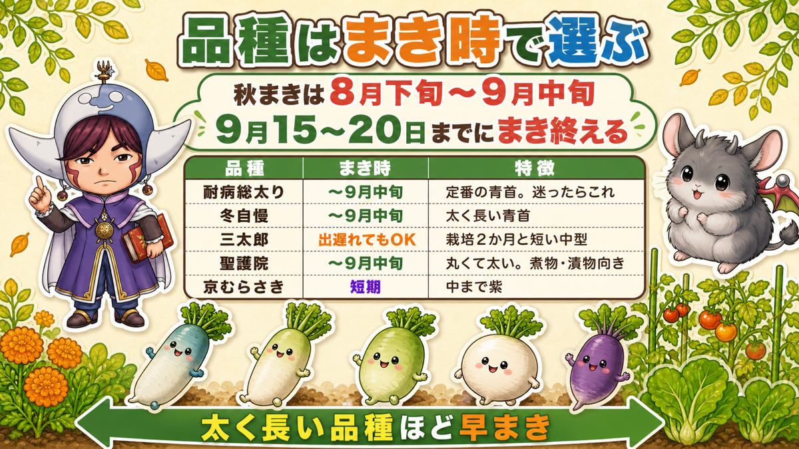
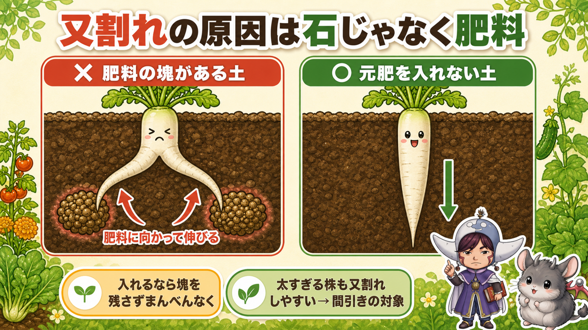
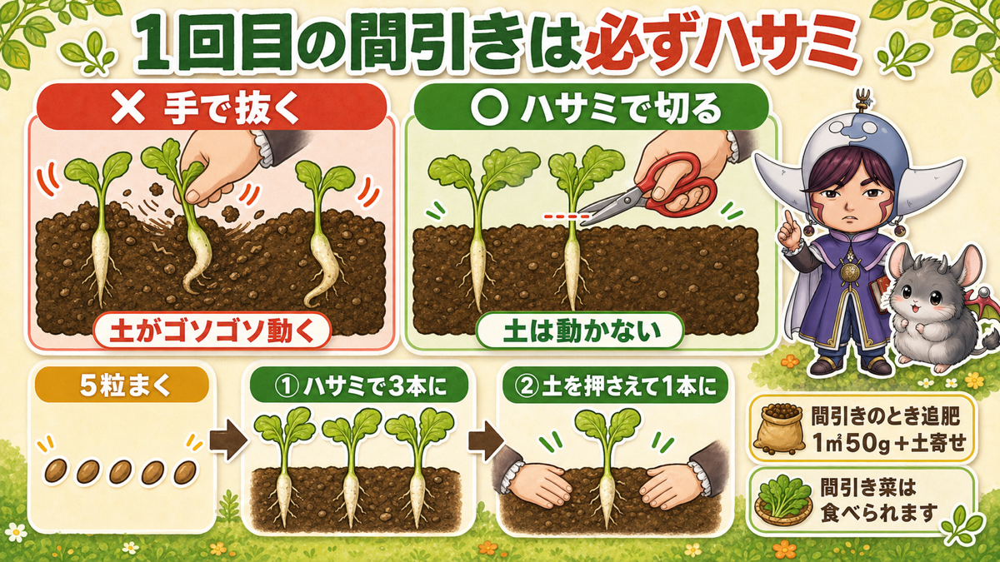
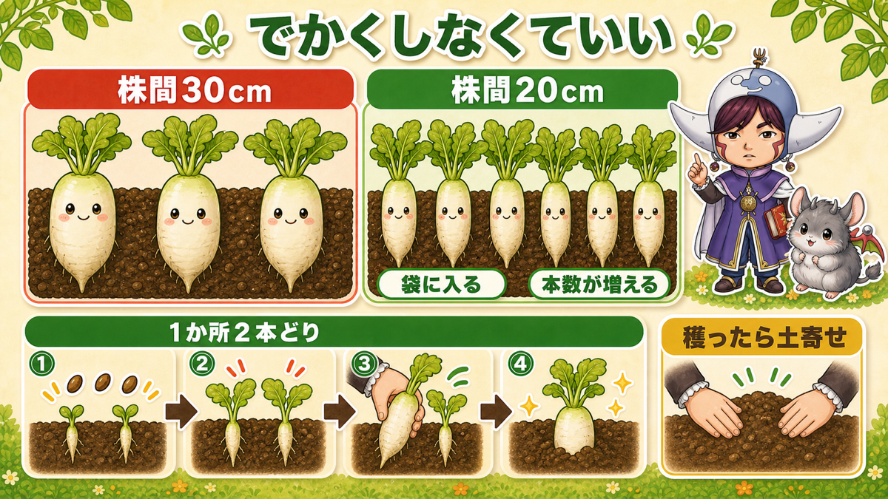
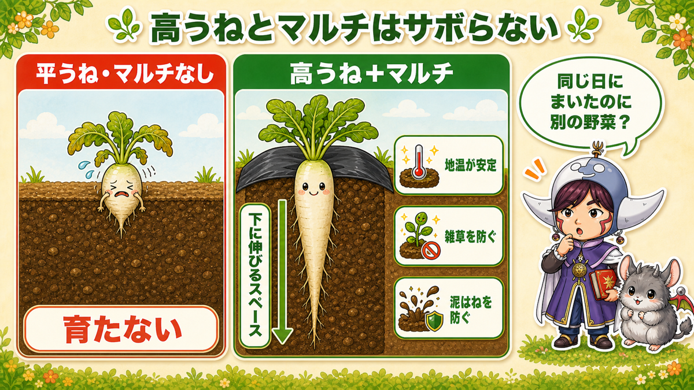
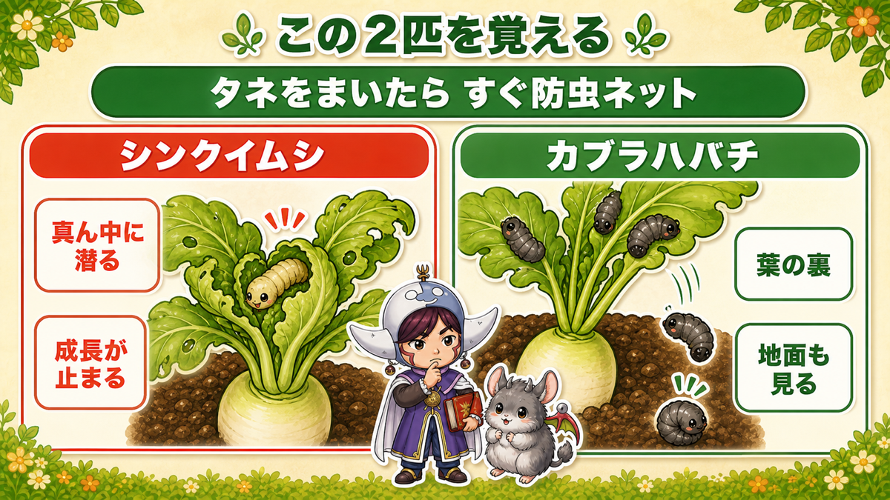
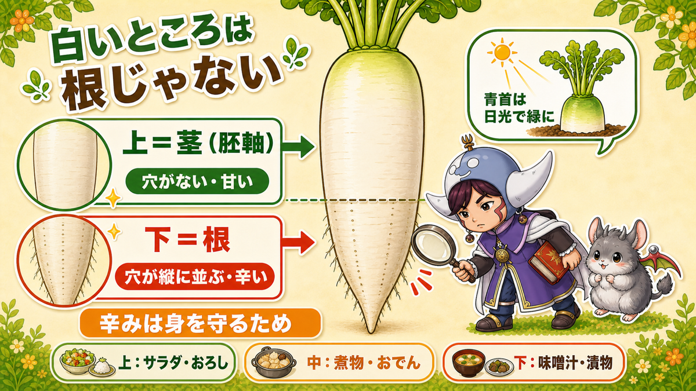
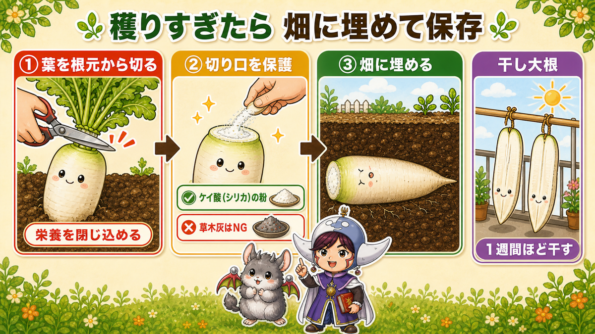

【保存版】大根を育てて学ぶ🔵 又割れの本当の原因と、間引きで全部決まる話
🗨️「大根、いつも二股に割れちゃう…」
🗨️「石があるから割れるって聞いたけど、うちの畑は石ないのに」
🗨️「太くならない。ひょろっと細いまま終わる」
どうも、8150（えいこう）です🌱 家庭菜園歴8年、理科の教員免許を持ってて、有機・無農薬で野菜を育ててます。
今日は大根です。冬の家庭菜園といったら、やっぱりこれ。
先に、この記事でいちばん言いたいことを言っておきますね。
又割れの原因は、石じゃありません。肥料です。
「え？」って思いました？ 私も最初そうでした。石を丁寧に取り除いたのに、その年もきれいに二股でしたから😇
理由が分かると対策はめちゃくちゃ簡単です。肥料を入れない。それだけ。
この記事では、その理屈と、あとひとつ——間引きのやり方をお話しします。この2つで、大根はだいたい決まります。
※以下の時期は中間地（関東〜関西の平野部）が目安。寒い地域は少し遅らせ、暖かい地域は早めに。種の袋にまく時期が書いてあるので、そこもチェック✨️
📖 この記事の目次
栽培データ
- 科：アブラナ科（仲間＝白菜・キャベツ・ブロッコリー・かぶ・小松菜。同じ場所は2年あける）
- タネまき：秋まき 8月下旬〜9月中旬／春まき 3〜4月（トンネル）
- 植え付け：なし＝畑に直まき。大根は移植すると根が傷んで又割れ・変形します
いつまく？ 品種は「栽培日数」で選ぶ

秋まきは8月下旬〜9月中旬。9月15〜20日までにまき終えるのが目安です。
ここで大事なのが、太く長くなる品種ほど、早くまかないといけないということ。育つのに時間がかかるからです。9月に入ってから「大きいの作ろう！」と長期型をまくと、寒くなって成長が止まり、中途半端なサイズで終わります。
迷ったらこの3つ
- 耐病総太り…定番の青首大根。まず失敗しません。困ったらこれ
- 冬自慢…太く長くなる青首。9月中旬までにまく
- 三太郎…栽培期間2か月前後と短い中型。出遅れた人はこっち。す入り（中がスカスカになること）が遅くて味もしっかり
時間があるなら、変わり種も楽しい
- 聖護院大根…長くならないけど丸く太る。す入りが遅く寒さに強い。煮物・漬物が最高。9月中旬まで
- 京むらさき…外も中も紫。2か月かからず穫れます。漬物や大根おろしにすると見た目が楽しい
- 天安紅心…中国の赤大根。小型で早いけど、暑さに弱いので早まきはNG
- あめっこ…首が紫。育てる期間で10〜30cmと大きさが変わります
私はいつも耐病総太りをメインに、余った場所で紫のやつを遊びで作ってます。子どもが切ったとき「うわ紫！」って驚くので、それだけで元は取れてる気がします☺️
又割れの本当の原因は「肥料」です

ここが今日の本題です。
大根が二股・三股に割れる。あれ、石にぶつかったからだと思われてますよね。もちろん石でも割れます。でも、石を取り除いても割れる畑は多いんです。
なぜ肥料で割れるのか
大根の根は、肥料に向かって伸びていきます。
土の中に肥料の塊があると、根はそっちに引っぱられます。塊が2か所にあれば、根は2方向へ。それが又割れの正体です。
逆に言うと、何もなければ根は素直に真下に伸びます。重力に従うだけですから。
だから、元肥はほぼ入れない
これが対策です。拍子抜けするくらい簡単。
有機で長くやっている人の中には、元肥をまったく入れず、よく耕してそのままタネをまくという人もいます。それで太くてまっすぐな大根が穫れています。
どうしても入れたい場合は、塊を残さず、まんべんなくすき込む。「ここに一握り」みたいな入れ方が、いちばんまずいです。
私は夏野菜の跡地を使うようにしています。残った肥料でちょうどいいんですよね。ゼロから肥料を入れるより、よっぽどまっすぐ育ちます。作付けプランの記事で書いた「後作」の考え方が、ここでも効いてきます。
もうひとつの原因：太すぎる株
意外なんですが、間引きのときに「いちばん立派な株」を残すと、それが又割れすることがあります。育ちすぎている株は、割れる確率が高いんです。
なので、飛び抜けて太いのと、貧弱すぎるのを外して、中くらいでバランスのいい株を残す。これが正解です。
間引きで、全部決まります

もうひとつの山場がここ。というか、大根は間引きで9割決まると思っています。
種のまき方
- 穴の深さ＝人差し指の第2関節より、ちょっと深いくらい
- 穴の直径は7cmほど（ポットがすっぽり入るくらい）
- 1か所に5粒（3粒でもOK）
- 覆土して、軽く押さえる
大根は光を嫌うタネ（嫌光性種子）なので、浅すぎると発芽が揃いません。
まいたら不織布をかけて湿りをキープ。まだ暑い時期なら遮光ネットをかけてください。
そして——発芽しなかった穴は、すぐまき直す。近年は高温で発芽が揃わないのが普通です。「まき直す前提」でいきましょう。
1回目の間引き（5本 → 3本）：必ずハサミで
ここ、赤線を引いてほしいところです。
手で引き抜かないでください。ハサミで切ってください。
理由はシンプルで、手で抜くと土がゴソゴソ動くから。そのわずかな動きで、残す大根の根が押されて、「く」の字や「へ」の字に曲がります。そこから又割れにもなります。
切った株の残った根は、そのうち分解して消えてなくなるので、気にしなくて大丈夫です。
私、1年目は知らずに全部手で抜いてました。その年の大根、見事に全部くねくねでした。ぜんぶ味は同じなんですけど、洗うときにちょっと悲しい😇
2回目の間引き（3本 → 1本）：土を押さえて抜く
ここまで育てば、手で抜いてもいけます。ただし条件付き。
土をしっかり押さえてから引き抜く。これが鉄則です。
抜いたあとは、土を軽く押さえて圧着しておきます。押さえすぎて根を曲げないよう、そっと。
残す株と絡んでいたり、くっついていたりする場合は、無理せずハサミで。
間引きのタイミングで追肥
このとき、1平方メートルあたり50g程度の追肥をします。ぼかし肥ならひとつまみ。そのあと軽く土寄せ。
間引き菜は捨てないでください。そのまま食べられます。おひたしでも味噌汁でも。これが地味においしいんですよね。
「でかい大根」を目指さなくていい話

ここ、けっこう気がラクになる話だと思います。
株間20cmでも大丈夫
大根の株間は30cmが一般的です。でも、20cmでもちゃんといい大根が穫れます。
太さは20cm強〜30cm弱と、少し小ぶりになります。でもこれ、冷蔵庫の袋に入れやすいんですよ。太すぎると袋に入らなくて、切ってラップして…って面倒になる。
しかも株間が狭いぶん株数が増えるので、トータルの収穫量はむしろ増えます。
「立派なやつを作らなきゃ」という気持ち、いったん置いてみてください。必ずしもでかいのを作る必要はないんです。
1か所2本どりという裏ワザ
もうひとつ、家庭菜園ならではのやり方を。
株間30cmで1か所3粒まき → 1本立ちにせず、2本残す。
こうすると、大きさに差が出てきます。そこで大きい方から先に収穫して、小さい方はそのまま置いておく。すると、残った方がぐんぐん太ります。
一度に全部穫れても食べきれないので、時間差で穫れるのはむしろありがたい。
コツが2つあります。
- 2本立てにするなら、種を1か所にまとめず、少し離してまく
- 片方を収穫したら、必ず土寄せして穴を塞ぐ。そのままだと残った大根が露出してしまいます
売り物には向かないやり方ですが、家庭菜園なら何の問題もありません。
うねとマルチは、サボらないでください

正直に言うと、私は一度「マルチなし・平うね」で作ったことがあります。自然に近い方がいいかな、と思って。
結果、まともに育ちませんでした。同じ日にまいた、高うね＋マルチの区画とは別の野菜かと思うくらい差が出ました。
- 高うねにする（大根が下に伸びるスペースを作る）
- マルチを張る（地温の安定・雑草・泥はね防止）
この2つは効きます。大根は土づくりとうね立てから、です。
無農薬の虫対策：この2匹を覚えてください

大根はキャベツや白菜ほど虫にやられません。それでも、無農薬できれいに作るならネットは張ったほうがいいです。
防虫ネットのトンネルは、タネをまいたらすぐにかける。これが基本。大きくなって霜が降りる頃には外してOKです。
シンクイムシ
いちばん被害が大きいのがこれ。ハイマダラノメイガという蛾の幼虫です。
居場所が独特で、成長点——これから新しい葉が出てくる、株のど真ん中に潜ります。
サインは、中心の葉がしおれて、くるっと包まれたようになっていること。そっと開くと、中にいます。ここをやられると成長が止まるので、見つけたら即。
カブラハバチ
葉の裏にいる黒っぽい幼虫。こいつには逃げ方のクセがあります。
触ろうとすると、ポロッと下に落ちて逃げます。
なので葉っぱだけ見て「いなくなった」と思わないでください。株元の地面も確認。だいたいそこで丸まってます。
虫対策そのものは無農薬の虫対策大全にまとめてあります。
見回りの頻度
無農薬なら、1〜2週間に1回では足りません。早め早めに、見つけ次第です。とはいえ大根はまだラクなほう。白菜に比べたら全然です。
学ぶ：大根の白いところは、根じゃない？🔬

理科の時間です。ここ、お子さんに聞いてみると盛り上がります。
「大根の白いところって、根っこ？」
答えは——上のほうは茎で、下のほうが根なんです。
見分け方、めちゃくちゃ簡単です。ヒゲ根（細い根）が出ている穴を見てください。
- 穴が縦にまっすぐ並んでいる部分＝根
- 穴がない、つるっとした部分＝茎（正確には胚軸といいます）
そして上（茎）のほうが甘く、下（根）のほうが辛い。
なぜかというと、辛み成分は虫や動物に食べられないための防御だからです。地面の中で無防備な根っこほど、守りを固めているわけですね。かしこい。
だから料理も使い分けられます。
- 上のほう（甘い）…サラダ・大根おろし（甘いおろし）
- 真ん中…煮物・おでん（味が染みる）
- 下のほう（辛い）…味噌汁・漬物・薬味用のおろし
収穫したとき、上と下を薄く切って食べ比べてみてください。ほんとうに味が違います。「同じ大根やのに！」ってなりますよ。これ、立派な観察実験です☺️
ついでにもうひとつ。青首大根の首が緑なのは、そこが土から出て日光に当たって光合成しているから。じゃがいもが日に当たると緑になるのと同じ理屈です。
収穫と、そのあと

採り遅れると損します
大根は置きすぎると、
- す（す入り）が入る…中がスカスカになる
- 表面がしわしわになる
- 暖かい時期だととう立ちする（花が咲いて食べられなくなる）
「もう少し大きく」と欲張ると、これにやられます。首の太さが目安のサイズになったら穫る。これに尽きます。
一度に穫れすぎたら：土中保存
家庭菜園あるあるで、同じ日に全部食べごろになります。冷蔵庫にも限界がある。
そこで、畑にそのまま埋めて保存します。これが新鮮なまま長持ちするんです。
やり方は3ステップ。
- ①葉を、付け根からスパッと切り落とす…スーパーの切り方じゃ甘いです。葉が伸びる隙を与えないくらい、根元から一刀両断。こうすると成長するエネルギーが大根の中に閉じ込められます
- ②切り口を保護する…そのまま埋めると、切り口から雑菌が入ります
- ③畑に埋める
切り口の保護に草木灰を使う人もいますが、アルカリが強すぎるので私は最近使っていません。じゃがいもに使うと、そうか病の原因にもなりますし。
私が使っているのは、じゃがいもの種いもを切ったときに使うケイ酸（シリカ）の粉です。商品名でいうと「じゃがいもシリカ」。春の種いもコーナーに並んでいるやつですね。切り口に薄くまぶすだけです。
干し大根・割り干し大根
もうひとつ、干すという手があります。
縦に割って1週間ほど干すだけ。これで甘みがぐっと出て、漬物に最高の割り干し大根になります。ベランダでもできますよ。
面白いのが、スーパーで買った大根でも同じことができること。「畑がないから…」という方も、これは今日からできます。
まとめ
ここまで読んでくださって、ありがとうございます！
大根って、コツを外すと全部くねくねになるし、当たると惚れ惚れするくらいまっすぐ育ちます。その分かれ目は、じつは2つだけです。
- 又割れの原因は石じゃなく肥料。大根は肥料に向かって伸びるので、元肥はほぼ入れない
- 1回目の間引きは必ずハサミ。手で抜くと土が動いて、残す大根が曲がる
- 品種は栽培日数で選ぶ。太く長い品種ほど早まき（9月中旬まで）
- 株間20cmでOK・1か所2本どりもアリ。でかいのを作らなくていい
- 高うね＋マルチはサボらない。シンクイムシは成長点、カブラハバチは触ると下に落ちる
- 穫りすぎたら葉を根元から落として土中保存、または干して割り干し大根に
まずは、肥料を入れずにまいてみてください。それだけで、今年の大根はまっすぐになります🔵
次回は、同じアブラナ科の大物「白菜を無農薬で結球させる」。虫との戦いと、「葉が巻くしくみ」をお話しします🥬
じゃがいもシリカ（ケイ酸の粉）
記事で「土に埋めて保存するとき、切り口につける粉」と書いたのがこれです。じゃがいもの名前がついていますが中身は天然のケイ酸で、切り口を守って腐敗を防いでくれます。1袋で種芋100〜150個分あるので、大根の土中保存には何年ぶんもあります。
![[商品価格に関しましては、リンクが作成された時点と現時点で情報が変更されている場合がございます。]](https://hbb.afl.rakuten.co.jp/hgb/565b74ce.f30a48e7.565b74cf.8a827250/?me_id=1368676&item_id=10000491&pc=https%3A%2F%2Fthumbnail.image.rakuten.co.jp%2F%400_mall%2Farakawaseed%2Fcabinet%2Fcompass1582111506.jpg%3F_ex%3D240x240&s=240x240&t=picttext "[商品価格に関しましては、リンクが作成された時点と現時点で情報が変更されている場合がございます。]")

防虫ネット
大根はまいた直後から狙われます。シンクイムシもカブラハバチも、ネットさえかけておけば入ってきません。無農薬でやるなら、いちばん最初に用意するものだと思っています。
![[商品価格に関しましては、リンクが作成された時点と現時点で情報が変更されている場合がございます。]](https://hbb.afl.rakuten.co.jp/hgb/56bc205d.0066fedc.56bc205e.af56d163/?me_id=1260467&item_id=10000299&pc=https%3A%2F%2Fthumbnail.image.rakuten.co.jp%2F%400_mall%2Fmarsol-morishita%2Fcabinet%2Fshouhinn%2Fbouchuu%2Fimgrc0090950099.jpg%3F_ex%3D240x240&s=240x240&t=picttext "[商品価格に関しましては、リンクが作成された時点と現時点で情報が変更されている場合がございます。]")
穴あき黒マルチ
高うねにして、これを張っておくと草が生えず、地温も保てます。大根は間引きのたびに株元を触るので、マルチがあると作業がずいぶんラクです。
![[商品価格に関しましては、リンクが作成された時点と現時点で情報が変更されている場合がございます。]](https://hbb.afl.rakuten.co.jp/hgb/55521906.a3595d78.55521907.92994d18/?me_id=1225177&item_id=10035007&pc=https%3A%2F%2Fthumbnail.image.rakuten.co.jp%2F%400_mall%2Fssn%2Fcabinet%2F02584092%2F07223762%2F4980356008386_1.jpg%3F_ex%3D240x240&s=240x240&t=picttext "[商品価格に関しましては、リンクが作成された時点と現時点で情報が変更されている場合がございます。]")